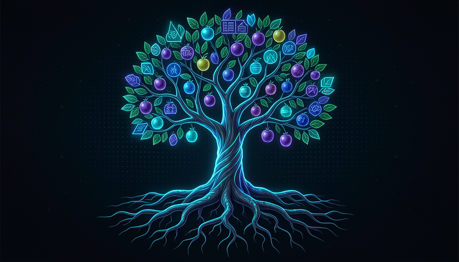

📖 Glossário vivo (leia antes — volte sempre que precisar)
Os termos novos deste módulo, em linguagem simples. Os termos-base (modelo, agente, skill, harness…) já foram definidos na Trilha 1 — aqui a gente só usa.
📘 Conhecimento: entender
🧠 Imagine assim: você leu um livro inteiro sobre como andar de bicicleta — física do equilíbrio, marchas, freios. Você sabe tudo. Mas isso ainda não é saber andar. Conhecimento é ter o mapa na cabeça; ainda não é ter pedalado.
Pocock divide "saber uma coisa" em três camadas, e a primeira é o conhecimento (em inglês, knowledge). É o que ele chama de "o fundamental, entender na cabeça": você compreende o que uma coisa é, por que ela existe e como funciona — pelo menos no papel. É a camada mais fácil de adquirir: você lê, assiste, alguém explica, e pronto, está na sua cabeça.
Por que essa separação importa pro nosso curso? Porque conhecimento é justamente o tipo de coisa que a IA distribui de graça e em segundos. Peça ao modelo "me explique o que é injeção de dependência" e você recebe uma aula. O erro comum de iniciante é confundir esse acesso fácil ao conhecimento com competência real: ler sobre testes não faz você bom em testar, do mesmo jeito que ler sobre natação não te ensina a nadar. Conhecimento é necessário, mas é só o degrau 1 de 3 — e, sozinho, é o mais barato dos três.
Três degraus que costumamos chamar todos de "saber". Sobem do mais barato ao mais caro.
⚠️ Erro comum de iniciante
Achar que "li/assisti sobre isso" = "sou bom nisso". Conhecimento entra rápido, mas não vira competência sem os outros dois degraus. A IA torna o conhecimento ainda mais barato — o que faz a diferença migrar pros degraus de cima.
Em 1 frase: conhecimento é entender na cabeça — o degrau mais fácil, e o que a IA entrega de graça.
Indo mais fundo (opcional): por que "saber" tem três nomes?
No português do dia-a-dia usamos uma palavra só — "saber" — pra três coisas que filósofos separam há séculos: saber-que (knowledge), saber-como (skill) e saber-quando/julgar (wisdom). Misturar as três é a origem de muita frustração com IA: você delega achando que dá pra empacotar tudo, mas só os dois primeiros cabem numa skill. O terceiro é o que sobra — e por isso vira o seu diferencial.
💪 Habilidade: o músculo
🧠 Imagine assim: agora você pedalou cem vezes. Você não pensa mais em equilíbrio — o corpo faz sozinho. Caiu? Levanta e segue. Isso é habilidade: o conhecimento virou automático no fazer, na repetição.
O segundo degrau é a habilidade (em inglês, skills). Nas palavras de Pocock, é "ter feito várias vezes, muscle memory" (memória muscular). Não basta entender: você precisa ter executado a coisa repetidamente, errado, ajustado, repetido — até o gesto ficar fluido. É a diferença entre saber a receita e cozinhar bem o prato; entre ler sobre debugging e debugar um problema feio às duas da manhã sem entrar em pânico.
Repare numa pegadinha de vocabulário: aqui "skill" significa a sua habilidade humana de fazer algo. Na Trilha 3 a palavra skill vai significar outra coisa — o procedimento que você empacota pro agente. Não é coincidência: a skill-procedimento é justamente a tentativa de congelar a sua habilidade num arquivo. O porquê de isso conectar com o curso inteiro: a IA hoje é excelente em executar a parte "muscular" do trabalho — ela já fez aquele tipo de tarefa milhões de vezes no treino. O erro comum é achar que, por a IA ter o músculo, você não precisa do seu: sem a sua habilidade pra julgar o resultado, você não consegue nem dizer se a IA fez bem.
Recuperação rápida: o que diferencia habilidade de conhecimento?
Em 1 frase: habilidade é o conhecimento que virou músculo na repetição — saber fazer, não só saber.
🦉 Sabedoria: quando fazer
🧠 Imagine assim: você sabe pedalar muito bem (habilidade). Mas a sabedoria é saber que, naquela estrada de chão molhado, à noite, com criança na garupa — é melhor descer e empurrar. Não é saber pedalar; é saber quando não pedalar.
O terceiro degrau é o mais sutil: a sabedoria (em inglês, wisdom). Pocock a define como "saber QUANDO fazer, como encaixa no mundo real". Não é sobre executar — é sobre julgar: este é o momento? esta é a abordagem certa pra ESTA situação? vale o custo? Você pode ter todo o conhecimento e toda a habilidade e ainda assim tomar a decisão errada, porque sabedoria é a camada que conecta a técnica ao contexto onde ela vai viver.
É aqui que a IA esbarra num limite duro. O modelo tem conhecimento (treinou em tudo que já se escreveu) e tem habilidade (já "fez" o padrão milhões de vezes). Mas ele não viveu a sua situação: não sabe que aquela parte do código é frágil porque um cliente importante depende dela, nem que o prazo aperta por um motivo político, nem que esse atalho já deu errado no ano passado. O porquê isso importa: a sabedoria é o degrau que mais resiste a ser automatizado — e, portanto, o que mais te valoriza como humano no loop. O erro comum é terceirizar o julgamento ("a IA decide") em vez de só terceirizar a execução.
📘 Conhecimento
Sei o que é. Pergunta: "o que é cache?"
💪 Habilidade
Sei fazer. Pergunta: "implementar cache aqui."
🦉 Sabedoria
Sei quando/se. Pergunta: "vale cachear agora, ou vai esconder um bug?"
Em 1 frase: sabedoria é saber quando e se — o julgamento que conecta a técnica ao mundo real.
🏢 Sabedoria precisa de contexto
🧠 Imagine assim: você pode ler todos os livros de medicina (conhecimento) e treinar suturas mil vezes num manequim (habilidade). Mas saber conduzir uma cirurgia de verdade, no caos da emergência, com aquele paciente específico? Isso só se ganha no centro cirúrgico. O lugar ensina o que o livro não tem.
Aqui está a observação mais forte do módulo. Pocock diz que a sabedoria é "quase impossível sem ter feito a coisa no contexto exato". E dá um exemplo que fixa a ideia: "To be like someone at Anthropic you can gain the knowledge and skills, but you'd need to go to Anthropic to gain the wisdom." — ou seja, pra ser como alguém da Anthropic, você consegue ganhar o conhecimento e as habilidades por fora, mas precisaria ir pra Anthropic pra ganhar a sabedoria.
Por quê? Porque a sabedoria daquele lugar está nas decisões reais que só acontecem lá: as restrições internas, as conversas de corredor, os trade-offs que ninguém documenta, os erros que já custaram caro. Conhecimento e habilidade são transferíveis — você baixa, você treina. Sabedoria é situada: ela gruda no contexto que a gerou. A consequência prática pro nosso curso é direta: você consegue empacotar e delegar os dois primeiros degraus, mas o terceiro fica com quem vive o contexto — você. O erro comum é esperar que uma skill ou uma IA carregue a sabedoria do seu negócio; ela não esteve lá.
🔬 Exemplo resolvido: os três degraus numa decisão real
Situação: o time vai escolher se reescreve um módulo legado de pagamentos. Veja como cada degrau aparece — e onde a IA ajuda ou não:
📘 Conhecimento (IA entrega)
"O que é o padrão strangler-fig pra migrar legado?" A IA explica em segundos. De graça, transferível.
💪 Habilidade (IA executa)
"Escreva o adaptador que envolve o módulo antigo e a suíte de testes." A IA gera o código — já fez isso milhares de vezes.
🦉 Sabedoria (só você tem)
"DEVEMOS reescrever agora?" Você sabe que o cliente X depende desse fluxo, que o último incidente foi aqui, que há uma auditoria em 3 meses. A IA não esteve nessas reuniões. A decisão é sua.
Em 1 frase: conhecimento e habilidade viajam; a sabedoria fica presa no contexto que a gerou.
📦 Empacotar os dois primeiros
🧠 Imagine assim: um chef que escreve a receita exata e os passos de preparo num cartão. Qualquer cozinheiro do time agora reproduz o prato igual — sem o chef. O que NÃO cabe no cartão é o paladar dele pra saber quando o prato "está pronto" pra aquele cliente.
Vem a parte acionável. Pocock diz: você consegue empacotar os dois primeiros (knowledge + skills) numa skill reutilizável. Como conhecimento e habilidade são transferíveis, eles cabem num arquivo de instruções que o agente executa sempre igual. É o DRY humano: nas palavras dele, "I've made this plan 100 times → turn it into a skill, distribute to the team, everyone plans the same way, contributing back to that skill, raising the floor." — fiz esse plano 100 vezes, então viro isso numa skill, distribuo pro time, todo mundo planeja igual, todos contribuem de volta, e o piso sobe.
Repare no efeito composto: ao empacotar, você não economiza só o seu tempo — você eleva o piso do time inteiro (o pior caso fica melhor) e cria um lugar único onde a habilidade é refinada por todos. O erro comum é tentar empacotar a sabedoria junto — escrever na skill "decida se vale a pena". Não vale: a skill carrega o como, mas o quando/se continua sendo chamada sua, caso a caso. Abaixo, um esqueleto real de skill que empacota apenas os dois primeiros degraus — copie e adapte:
--- name: plano-de-feature description: Meu jeito de planejar uma feature nova (já fiz isso 100x). --- # CONHECIMENTO (o que precisa ser entendido) - O que é o produto, quem é o usuário, qual problema resolvemos. - Padrões do nosso codebase: camadas, nomes, onde mora cada coisa. # HABILIDADE (os passos, sempre nesta ordem) 1. Mapear os arquivos afetados antes de tocar em qualquer um. 2. Escrever os testes do caso feliz + 2 casos de borda PRIMEIRO. 3. Implementar em fatias pequenas; rodar os testes a cada fatia. 4. Abrir PR pequeno com um resumo do "porquê". # O QUE ESTA SKILL NAO DECIDE (fica com o humano = SABEDORIA) - SE esta feature deve ser construida agora. - Trade-offs de prazo/risco que dependem do contexto do negocio. - Quando "bom o bastante" e bom o bastante.

Em 1 frase: conhecimento + habilidade cabem numa skill que sobe o piso do time; a sabedoria, não.
🎯 O que não dá pra delegar
🧠 Imagine assim: você é o maestro. A orquestra (a IA) toca cada nota com perfeição técnica — esse é o conhecimento e o músculo dela. Mas escolher a música, sentir o público e decidir o ritmo daquela noite? O regente não delega isso. É o que faz a noite ser dele.
Fechando o módulo num princípio operacional: delegue execução, guarde julgamento. Conhecimento e habilidade (os dois primeiros degraus) você empacota em skills e entrega à IA — ela é ótima neles. Sabedoria (o terceiro) você mantém, porque depende de viver o seu contexto, e é exatamente o que te torna insubstituível no loop. Toda vez que for delegar, separe mentalmente: "isto é o como (vai pra skill) ou o quando/se (fica comigo)?" Use o checklist abaixo pra decidir na hora — copie e cole quando for desenhar uma skill nova:
Antes de delegar uma tarefa a IA, classifique cada parte: [ ] E CONHECIMENTO? (entender o que/por que) -> delegue: a IA explica. [ ] E HABILIDADE? (executar um passo conhecido) -> delegue: vira skill. [ ] E SABEDORIA? (quando/se/vale a pena, dado o contexto) -> GUARDE. Pergunta de ouro: "a IA esteve nas reunioes onde isso se decidiu?" - Nao esteve -> e sabedoria -> a decisao e SUA (a IA so executa o resultado). - Esteve (esta tudo no prompt/codebase) -> pode delegar com seguranca.
Recuperação rápida: dos três degraus, qual NÃO dá pra empacotar numa skill?
Em 1 frase: delegue o como à IA; guarde o quando/se — é o que não dá pra delegar.
🧾 Resumo do Módulo
Próximo módulo:
2.4 — Fundamentos de delegação: como entregar a execução à IA sem perder o controle do difícil.